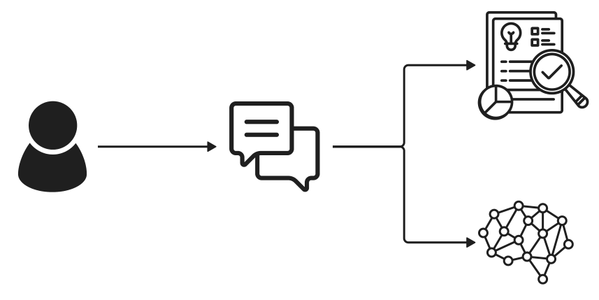
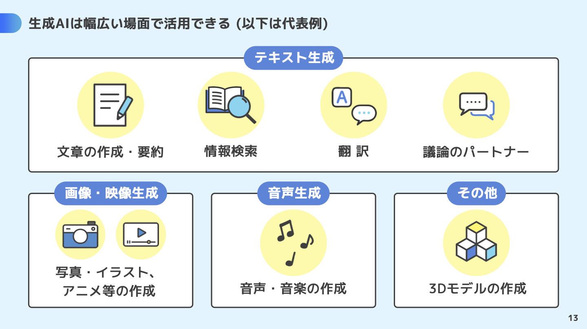

AIへの期待
- 作業や学習の時間を短縮したい
- 情報整理や文章・画像作成を手伝ってほしい
- 自分では思いつかないアイデアを得たい
- 面倒な作業を効率化したい
2026年度 / プログラミング演習 / 第2回
指示を考え、作って、確かめる。
生成AIと一緒に
チャットアプリを形にする
2026年10月2日
担当：髙田
全7回 / 今回は第2回
| 回数 | 1 (9/25) |
2 (10/2) |
3 (10/9) |
4 (10/16) |
5 (10/23) |
6 (11/6) |
7 (11/13) |
|---|---|---|---|---|---|---|---|
| テーマ | AI 基礎 | プロンプトエンジニアリング | AI の活用と倫理 | AI を活用したアプリ生成 ① | AI を活用したアプリ生成 ② | 総合演習 | 総合演習 |
| 担当講師 | 伊藤、髙田 | 髙田 | 伊藤 | 伊藤 | 髙田 | 髙田、伊藤 | 伊藤、髙田 |
13:40-14:25, 45分
PROGRAMMING / 2026
25分
CHAPTER 1
5分 / 1問目
今日はどの生成AIを相棒として使う予定?
① ChatGPT
② Claude
③ Gemini
④ その他 (スレッドでサービス名を投稿)
5分 / 2問目
「Mythos（ミトス）」と「Fable（ファーブル）」って知ってる？
① ニュースで見て震えた（セキュリティヤバいよね）
② クロードの新しいやつでしょ？名前だけ！
③ ギリシャ神話とイソップ童話の話……？
Claude Mythosとは？Project Glasswing・3メガバンク・日本政府の動きを整理【2026年5月版】
5分 / 3問目
OpenAIのdotsって知ってる？
① 知ってる！どんなものか説明できる
② 名前だけ聞いたことある！
③ 初耳！ドット絵の話……？
5分 / 4問目
HTML/CSS触ったことある？
① ある
② ちょっとだけ
③ なにそれおいしいの？
5分 / 1・3
5分 / 2・3
5分 / 3・3
生徒たちは、AIによる「効率化・できることの拡大」への期待を持つ一方で、「情報をどこまで信頼できるのか」「AIに頼りすぎることで自分で考える力が低下しないか」という不安も感じていた。
また、AIを単なる便利なツールとしてだけでなく、「AIは考えているのか」「感情や自我はあるのか」「人間と何が違うのか」という、AIそのものへの関心も多く見られた。
全体として、
「AIを使ってできることを広げたい」という期待と、「AIをどこまで信頼し、どのような距離感で使うべきか」という問いが共存している
1-3. 宿題の確認と解説
生成AIがどのようなファイルを生成したかGoogle AI Studioで確認しましょう。
Note今日はコードを読めるようになる必要はありません。画面の構造・見た目・動きに、それぞれ役割があると分かればOKです。
1-3. 宿題の確認と解説
コードは、コンピューターに表示や動作を伝えるために書かれたものです。 最終的にブラウザに表示されている画面は、複数のコードファイルの組み合わせでできています。
Noteindex.htmlからどのようなファイルが紐づいているのか辿ってみよう
1. 導入 (25分) / 1限目（前半）：プロンプトと生成AIの仕組みを知る (13:40-14:25, 45分)
Webページでは、HTML・CSS・JavaScriptがそれぞれ異なる役割を担います。
| 名前 | 役割 | このゲームでいうと |
|---|---|---|
| HTML（エイチティーエムエル） | 画面の構造を作る | 見出しやボタンなど、部品の土台 |
| CSS（シーエスエス） | 見た目を整える | 色、文字の形や大きさ、配置 |
| JavaScript（ジャバスクリプト） | 動きを付ける | キー操作への反応、弾の移動、得点の計算 |
このゲームでは、JavaScriptに書き方のルールを加えた
TypeScript（タイプスクリプト）
と、画面を部品に分けて作る
React（リアクト）
も使っています。そのため、ファイル名の末尾に .ts や
.tsx
が出てきます。今は「画面や動きを作るコードが入っている」と捉えましょう。
1-3. 宿題の確認と解説
生成AIが作成したファイルの役割を聞いてみよう
生成したファイルの構造と役割を教えてください。
設定ファイルと、アプリ本体のコード
retro-space-defender/
├── index.html … ページの土台・表示場所
├── package.json … 使用ライブラリ・実行コマンド
├── vite.config.ts … 開発・ビルド環境の設定
├── tsconfig.json … TypeScriptの設定
├── metadata.json … AI Studio向けのアプリ情報
├── .env.example … 環境変数の記入例
├── .gitignore … Git管理から除外するファイルの指定
├── README.md … 起動方法の説明
└── src/ … アプリ本体のソースコード ├── main.tsx … Reactの起動処理
├── App.tsx … ページ全体の構成
├── index.css … 共通の見た目
├── game/
│ ├── GameCanvas.tsx … ゲームの処理・描画・操作
│ └── types.ts … ゲームで使うデータの型
└── audio/
└── sound.ts … 効果音の生成・再生
5分
私たちは普段、授業や生活の中で生成AIと会話し、無意識のうちに「プロンプト」を作っています。
この授業では、プロンプト設計の4原則（明確性・制約の明示・役割付与・手順分解と例示）を実践を通して理解し、授業や就職活動、さらにはWebアプリの制作など、さまざまな場面で生成AIを役立てるための基盤を築くことを目指します。
さらに応用として、Webアプリを作るためのプロンプトと、アプリに組み込まれた生成AIの振る舞いを決めるプロンプトの両方を作成し、目的に応じてAIへの指示を設計する力を養います。
25分
CHAPTER 2
5分
プロンプトは、生成AIに渡す指示や情報です。「何をしてほしいか」に加えて、背景、条件、参考資料、出力例なども含められます。
文章を生成する言語モデルの処理を、大まかに表すと次のようになります。
指示・参考情報・会話履歴
文章をトークンに分ける
入力と生成済みの内容から
候補を計算して選ぶ
回答として表示する
自然な文章でも、内容が正しいとは限りません。指示を具体化することと、出力を確かめることをセットで行いましょう。
5分
トークンは、モデルが文章を扱うための単位です。単語の一部や記号なども単位になるため、「1文字＝1トークン」「1単語＝1トークン」とは限りません。
tiktoken や Anthropic
のトークンカウンターなど、各社が提供するツールで事前に文字数とトークン数を確認できます。ドキュメント作成やコードレビューなど長文を扱う際は、これらのツールで見積もりを行うと効率的です。
代表的な商用モデルのコンテキスト長は以下の通りです。最新情報は各社の公式アナウンスを参照してください。
参考：Google：トークンの理解とカウント
OpenAI Developers Models ／ Gemini モデル ／ Claude モデル
Gemini API 長いコンテキスト ／ Claude コンテキストウィンドウ
README掲載の目安 / 1・2 / 最新情報は公式資料で確認
| プラットフォーム | モデル | 最大トークン数 (目安) | 備考 |
|---|---|---|---|
| ChatGPT | GPT-6 Astra | 約 1,050,000 トークン | OpenAIの最上位モデル。複雑な推論・プログラミング・調査・文書作成に対応。 |
| ChatGPT | GPT-6.1 Sol | 約 1,050,000 トークン | Astraに近い性能を低コストで提供。複雑なプログラミングやコンピューター操作、実務に対応。 |
| Gemini | Gemini 3.1 Pro | 約 1,000,000 トークン | プレビュー版。高度な推論やプログラミング、ツールを使った複数ステップの処理に対応。 |
README掲載の目安 / 2・2 / 最新情報は公式資料で確認
| プラットフォーム | モデル | 最大トークン数 (目安) | 備考 |
|---|---|---|---|
| Gemini | Gemini 3.8 Flash | 約 1,000,000 トークン | 安定版。速度とコスト効率を保ちつつ、長時間のソフトウェア開発や自律型エージェント、複雑な業務処理に対応。 |
| Claude | Claude Opus 5.5 | 約 1,000,000 トークン | 長時間にわたるエージェント型のプログラミングや知識を扱う業務に対応。幅広い用途で推奨されるモデル。 |
| Claude | Claude Sonnet 5.5 | 約 1,000,000 トークン | 応答速度と高い知能を両立したモデル。Opusより低コストで、推論・プログラミング・ツール使用に対応。 |
5分
Tokenizerに次の文章を貼り付け、区切られ方とトークン数を観察しましょう。ここでの数値が、別のモデルにもそのまま当てはまるわけではありません。
短くするだけで、よいプロンプトになるとは限りません。必要な条件まで消えていないか確認しましょう。
生成AIと一緒に作品を作りたい。
I want to create art with generative AI.
こんにちは！ 🎨 1234567890
1・3 / ダッシュボードの主要指標
Gemini API Rate Limit ダッシュボードを開いてみましょう。
2・3 / 無料枠の重要ルール
3・3 / エラー時の対処法
5分 / Retrieval-Augmented Generation
検索機能と生成AI（LLM）を組み合わせ、独自の資料や知識を回答に活用する仕組みです。

ナレッジベースなどから関連する情報を検索し、言語モデルが回答を作るときの参考情報として渡します。
14:25-15:20, 55分
PROGRAMMING / 2026
35分
CHAPTER 3
5分

5分
目的や期待する出力を具体的に伝える。
「卒業制作のアイデア」→「記憶をテーマにしたアイデア」
形式や条件を指定する。
「箇条書きで」「学生でも実現可能」「展示会場の制約を考慮」
どんな役割・視点で答えるかを伝える。
「現代アートに詳しいキュレーターとして講評して」
手順を分け、期待する形式の見本を示す。
「①テーマ整理 → ②作品構造 → ③必要なリソースの順に」
状況に合わせて組み合わせましょう。 参考：Google：プロンプト設計の戦略
5分
まずは、次のプロンプトを試しましょう。
ヒント：テーマは「記憶」「日常」、表現方法は「映像」「参加型の展示」など、興味のあるものを選べます。
卒業制作のアイデアを考えて。
5分
ヒント：回答の件数・文字数・表や箇条書き、予算・制作期間・使える機材・展示場所など。
5分
作品案を1つ選び、次のプロンプトを試しましょう。
ヒント：展示の企画者、初めて見る来場者、制作を手伝う人など。どんな意見が制作に役立つかを考えます。
あなたは現代アートの展示を企画するキュレーターです。
次の作品案について、良い点と改善案を1つずつ挙げてください。
作品案：［選んだアイデアをここに貼り付ける］
5分
追加する手順の例
アイデアは、次の順番で検討してください。
1. テーマから連想する場面や感情を3つ挙げる。
2. その中から1つ選び、作品にする方法を2つ考える。
3. 2つの方法を、テーマの伝わりやすさと実現しやすさで比較する。
4. 1つ選び、具体的な作品案を提案する。
5分
次の卒業制作の作品案に、短いキャプション（展示用の紹介文）を付けてください。
作品案：［タイトルを含む作品案をここに貼り付ける］
次の卒業制作の作品案に、短いキャプション（展示用の紹介文）を付けてください。
見本の形式と雰囲気に合わせ、内容は作品案に合わせてください。
見本：
キャプション：消えていく言葉の向こうに、あなたの記憶は何を残すでしょう。
作品案：［同じタイトル・作品案をここに貼り付ける］
20分
CHAPTER 4
2分
ここからは、次の2種類の「AIへの指示」が登場します。
| 指示の種類 | 何を決める？ | 例 |
|---|---|---|
| アプリを作るAIへの指示 | 作るアプリの目的・画面・機能 | 「休日のお出かけを相談できるチャットアプリを作って」 |
| アプリ内のAIへの指示 | 利用者に返す回答の内容・口調・長さ | 「親しみやすい口調で、プランを3つ提案して」 |
まずはアプリを作るAIへの指示を工夫して、できあがるアプリの違いを観察します。アプリ内のAIの答え方は、後半で詳しく扱います。
3分
日本語で会話できるチャットWebアプリを作ってください。
Note画面と回答を見て、指示していないのにAIが決めたことを探しましょう。
短い指示でもアプリは作れますが、誰向けか、どんな画面にするかなどはAIに任せることになります。
15分
ヒント：明確性と制約の明示を使い、チャットアプリの用途を具体化しましょう。
15:40-16:30, 50分
PROGRAMMING / 2026
10分
CHAPTER 5
5分 / 1問目
前半で紹介した3つの役割を覚えていますか？ 最初のアイスブレイクと同じように、番号のリアクションで答えましょう。
見出しやボタンなど、画面の構造を作るのは？
① HTML
② CSS
③ JavaScript
5分 / 2問目
文字の色や大きさなど、見た目を整えるのは？
① HTML
② CSS
③ JavaScript
5分 / 3問目
キー操作への反応や得点の計算など、動きを付けるのは？
① HTML
② CSS
③ JavaScript
5分
Noteコードを書けるようになる必要はありませんが、生成AIが作成しているコードの理解を深めるために次の演習を実施してみましょう！皆さんは生成AIを武器にどんどんこのようなプログラムを生成し、自分自身の表現の幅をぜひ広げていってください。
#000000に変更し、保存。（他の色でも大丈夫です！）
40分
CHAPTER 6
5分
これまでは「アプリを作る指示」を考えてきました。ここからは「アプリ内のAIがどう振る舞うかを決める指示」を考えます。
利用者が短い文章を入力したり、ボタンを押したりするだけで、AIがその機能に合った結果を返すのはなぜでしょう？ サービスを作る側が、AIの役割や出力の条件をあらかじめ設計しているからです。その方法の一つが、利用者の画面には表示されない「AIへの指示」です。これをシステムプロンプトと言います。
システムプロンプトは、AIの役割や答え方のルールをあらかじめ設定する指示です。チャットアプリでは、利用者が毎回入力するメッセージとは別に、アプリ側で用意します。
5分
身近なサービスで、生成AIがどのような役割を担っているか見てみましょう。
| サービス・機能 | 概要 |
|---|---|
| LINE「ムードを分析」 | 直近のトークから、二人の関係性や会話の雰囲気を分析し、コミュニケーションのヒントを提示する機能。 |
| Genmoji | 作りたい絵文字を言葉で説明すると、メッセージで使えるオリジナルの絵文字を生成する機能。 |
| Asana AI Teammates（AI チームメイト） | 仕事の管理サービスAsanaで、人と協力して働くAI。プロジェクトの計画づくりや進捗の整理、文章の作成などを支援する。 |
| ええやん.ai | 作品の画像に複数のキャラクターがコメントし、チャットで作品についての言葉を整えられるアプリ。作者や周囲の人との会話のきっかけを作る。 |
6-2. 生成AIを組み込んだアプリやサービスの例
Note生成AIが組み込まれたサービス、他に知ってる？
自分のチャットアプリでも、この「利用者には見えない指示」を設定できます。次は、アプリ内のAIのキャラクターや答え方を考えてみましょう。
30分
1限目に作ったアプリで、システムプロンプトを変更してみましょう。各演習では、変更する項目以外はそのままにして、同じ質問への回答を比べます。比較するときは会話履歴をリセットするなど、新しい会話で試しましょう。
5分
ヒント：場所が分からなければ、アプリを作るAIに次のように聞いてみましょう。
このアプリ内のAIに渡しているシステムプロンプトは、コードのどこにありますか？
ファイル名と該当箇所、指示の内容を教えてください。まだ編集はしないでください。
5分
ヒント：アイデアを広げる発明家、実現方法を考える職人、初めて作品を見る来場者など。自分のアプリに合う役割を選びましょう。
5分
ヒント：「箇条書きで3つ」「結論→理由→次の一歩の順」「各案をタイトルと説明に分ける」など。文字数も指定できます。
5分
ヒント：「友人のように親しみやすく」「落ち着いた丁寧な言葉で」「関西弁で明るく」など。「否定から入らない」「絵文字は使わない」といった接し方も指定できます。
10分
ヒント：誰が何のために使うアプリかを振り返り、その人にとって相談しやすく、役立つ回答を考えましょう。
16:30-17:20, 50分
PROGRAMMING / 2026
20分
CHAPTER 7
10分
2人1組でお互いに作成したチャットアプリを紹介し、実際に使ってもらいましょう。
以下の項目を中心に共有しましょう。
10分
数名が、1人2分程度で紹介します。
10分
CHAPTER 8
5分
ヒント：次のように依頼できます。色・表情・画風など、希望があれば加えてみましょう。
以下は、私が作ったチャットアプリのシステムプロンプトです。
AIの役割や性格、語り口に合うキャラクターを考え、
画像生成用のプロンプトを作ってください。
アプリのアイコンとして使います。
［システムプロンプトを貼り付ける］
5分
ヒント：サービスによってプロンプトの書き方や設定が違うので、使うサービスの説明や入力欄を確認しましょう。
生成サービスを利用できない場合は、プロンプトを考えるところまでで大丈夫です。アプリへの画像・音の組み込みは、時間があれば挑戦しましょう。
8. 文章以外の生成 (10分) / 2限目 後半：試して、直して、共有する (16:30-17:20, 50分)
15分
CHAPTER 9
5分
Note何を作りたいかを考え、生成AIに伝え、結果を確かめて直す。この繰り返しを、自分の制作にも活かしましょう。
5分
今日の授業を振り返り、それぞれ一言ずつ書いてみましょう。
今日、印象に残ったこと：
感想・質問など：
5分